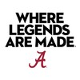
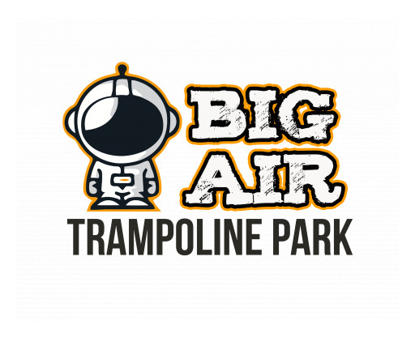

Experience
My professional journey and growth in technology
Graduate Teaching Assistant

Support 72 students across all lecture sections of Systems Analysis & Design through in-class instructional assistance and one-on-one guidance in problem solving, project management, and technical application. Evaluate weekly assignments, project deliverables, and technical exams against faculty-established rubrics, and partner with the primary instructor to track student performance and maintain consistent, timely grading.
Recruiter
Represent the Culverhouse College of Business by engaging prospective students and their families at recruitment events, open houses, and networking sessions. Lead campus tours and deliver informational presentations, offering personalized guidance on admissions, academic programs, and student life to enhance the overall recruitment experience.
Automation CoE Intern (Robotic Process Automation)
Supported enterprise reporting, database, and cloud automation initiatives. Migrated Power BI reporting assets to a new database environment by updating data connections, redesigning data relationships, and validating reports. Executed a Blue Prism database archival project covering 15.6 million records, resolving SQL execution issues while preserving data integrity through production cleanup. Developed and troubleshot an AWS-based intelligent agent for report processing to improve automation and operational efficiency.
Event Management Intern
Assisted in the planning and execution of athletic events by coordinating event setup and breakdown to ensure smooth operations. Supervised guest services staff, addressed attendee inquiries, and collaborated with facilities teams to streamline logistics and maintain a professional, fan-friendly environment.
Human Resources Information System Intern
Contributed to the global rollout of a new Human Capital Management system by documenting and testing PeopleSoft transactions across 30 countries. Audited 35 security roles to ensure accurate access permissions and regulatory compliance. Collaborated with HR teams and gained hands-on experience with systems such as Equifax and Adventure, enhancing understanding of global HR operations and third-party integrations.
Manager

Managed a team of 50+ employees to deliver safe, efficient, and engaging guest experiences. Designed and implemented onboarding and training programs to boost team performance and operational consistency. Oversaw employee records, inventory, and sales operations using CenterEdge, while ensuring smooth day-to-day staff coordination.